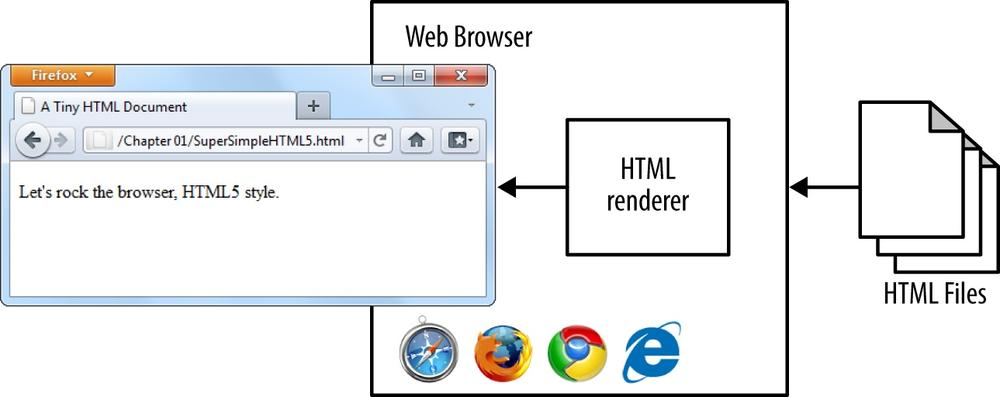

A travez del tiempo se ha observado como html un lenguage de programacion enfocado en hyertextos fue pasando de un metodo para compartir informacion ideado por Tim Berners Lee a una de las mayores fuentes de informacion mas grandes de la historia como lo es una pagina web, que visualiza un archivo HTML mediante un software llamado Browser. A continuacion se presentara mas informacion de estos terminos:
